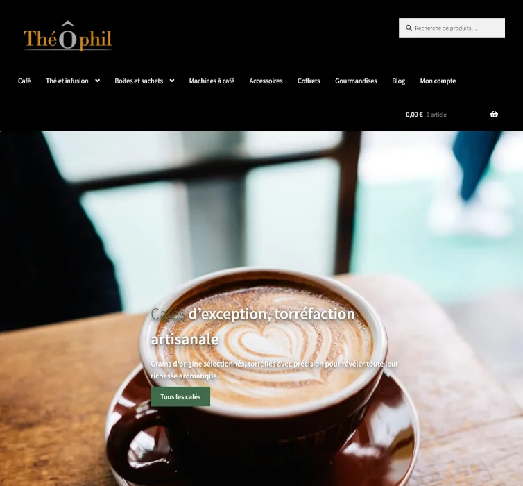
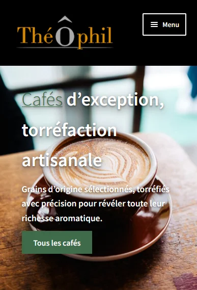

ThéÔphil · Nantes
Une boutique e-commerce pour un commerce de thés et cafés.
Conception d’un site e-commerce complet pour ThéÔphil, boutique de thés et cafés à Nantes : catalogue, fiches produits, parcours de commande, adaptation mobile et personnalisation graphique.
Réalisation
Site e-commerce
Technologies
WordPress / WooCommerce
Travail réalisé
Intégration, responsive, SEO, mise en ligne